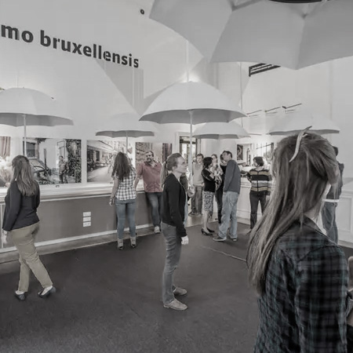
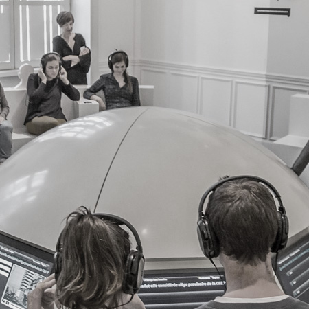
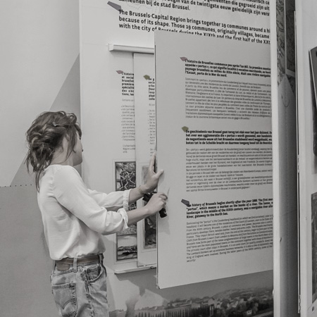

experience.Brussels!
L’exposition interactive expérience.Brussels! utilise des supports modernes pour
introduire le grand public aux multiples facettes de Bruxelles. Construite sous
forme de jeu, son interactivité et son intuitivité incitent à l’amusement.
Les salles, toutes aménagées de manière très variée, exposent la ville aux
joueurs comme peu l’auront déjà vue.

Bruxelles, la multiculturelle
Pendant l’exposition, les joueurs sont amenés à se promener dans ses couloirs décorés
des photos prises dans les rues des différents quartiers de Bruxelles. Toutes les
origines et tous les âges y sont reflétés, mettant en évidence la polyethnicité de la
ville et de la région. Le constat continue dans les salles, notamment la salle aux parapluies,
qui regroupe les témoignages divers d’habitants Bruxellois avec des histoires hétéroclites.
L’eB! permet de partir à la rencontre de quelques-unes des 183 cultures qui composent le
patchwork Bruxellois.

Les chroniques Bruxelloises.
Les salles emmènent les joueurs à la rencontre de Bruxelles à travers les âges,
passant de ses débuts de cité au moyen-âge jusqu’à son rôle dans l’Europe
d’aujourd’hui. Une salle particulièrement bien agencée permet de participer à un
questionnaire interactif qui expose l’histoire de Bruxelles aux joueurs qui auront
réussi, ou tenté de répondre. La disposition des salles incite le joueur à se perdre
dans l’histoire de Bruxelles, d’un quartier à l’autre, d’une date à l’autre ou d’un
événement, majeur ou non, à l’autre.

Bruxelles active !
eB! relate aussi aux joueurs les actions que Bruxelles met en place pour le confort
de ses habitants présents et futurs. Les transports, l’environnement, l’éducation, le
développement durable sont quelques-uns des thèmes qui sont abordés pendant le quiz et dans
une des salles de l’exposition qui est dédiée aux projets de la ville.
Dans l’ensemble,
l’exposition e.B! familiarise avec Bruxelles, qu’on y habite depuis toujours, ou qu’on
la visite pour la première fois.